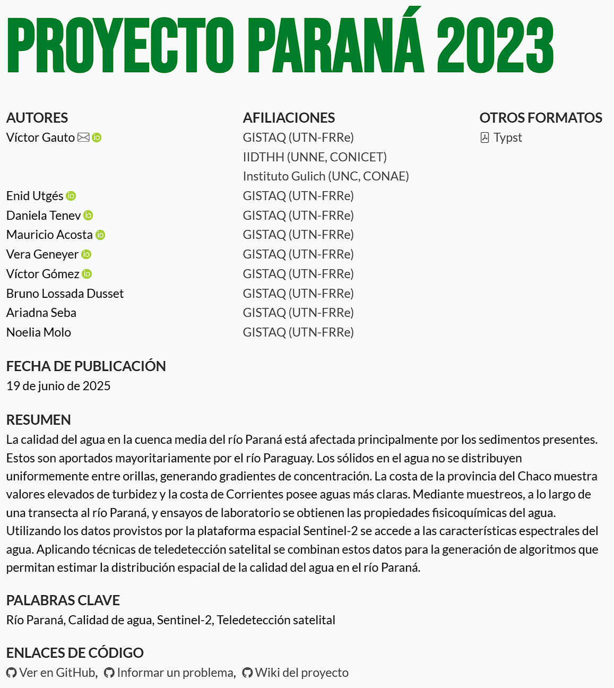
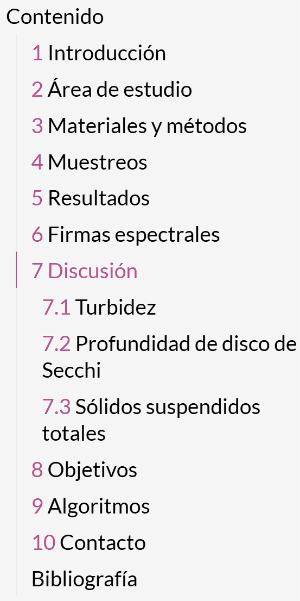
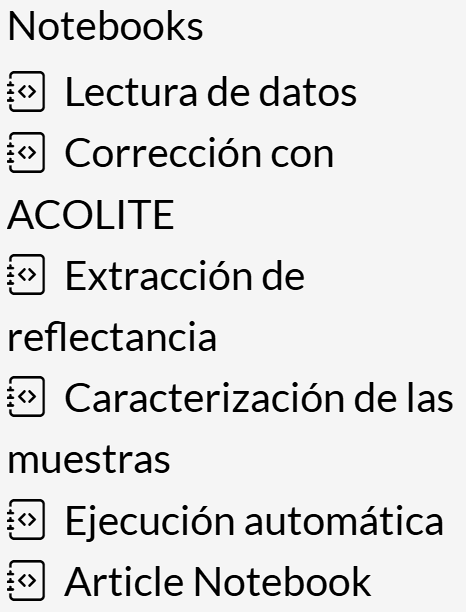
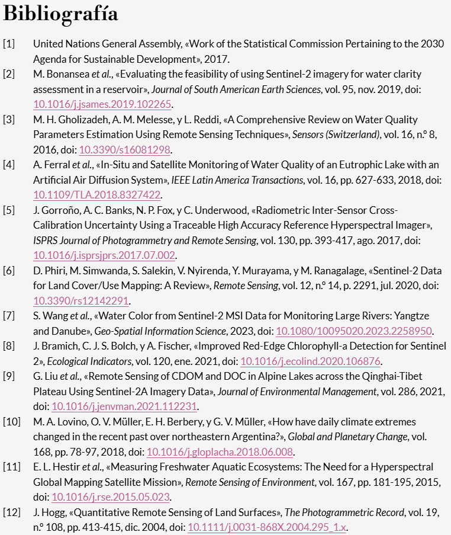

%%{
init: {
'themeVariables': {
'edgeLabelBackground': '#224289'
}
}
}%%
flowchart LR
a1[Thinking] ==> a2[Beginning]
a2 ====> |<span class="svg-spinners--clock"></span>| a3[Main goal]
a3 ==> a4([Paper])
a3 ==> a5([Conference])
a3 ==> a6([Report])
Elevate research projects with Quarto
Dr. Matías Bonansea
Dr. Anabella Ferral
Dr. Osvaldo Cardozo
Dr. Claudia Giardino
2025-03-06
Content
- Introduction
- Motivation
- Tools
- Future improvements
- Resources
Introduction
Research project
To estimate water quality indicators in Paraná River middle basin for algorithm development using satellite remote sensing techniques

Collaborative website with automatic running, free and open source.
Front page
- Authors
- Affiliation
- Last modified date
- Keywords
- More resources links

Table of content
- Sections and subsections
- Ease website navigation
- Variable content according to the development

Notebooks
- Source code description
- Processing data justification
- Calculus methodology explanation to promote reproducibility

References
- Formatted references according to desired style (
.csl) - Reference preview on citation hover

Maps, tables & interactive plots
- Results visualization
- Correlation between parameters exploration
- Spectral properties description
- Sample site location
Motivation
Research project typical life journey.
- Water sampling
- Physicochemical test
- Partial results analyses
- Reference reading
- Other tasks
During the project development
Dynamic document , that adapts to the current project state.Easy access site to check the latest results.Unified reference search.Script code execution and results
reproducibility .All project members can work seamless and without problems and
no fear of disarranging the document .Consultation resource and to admire all the
effort done .
Tools
R Python Git GitHub -
Quarto -
manuscriptallows website creation with an emphasis in reproducibility and targeted to scientific and academic documents.
-

targets allows automatic functions execution and dependencies management between them.
Check current workflow state and execute only outdated targets.
File monitoring and code re-execution when change detection.
graph LR
x3d474db92cf09724>"mensaje"]:::outdated ==> xc5ec810879cc40ee>"recorte"]:::outdated
x3d474db92cf09724>"mensaje"]:::outdated ==> x32cb0d977e75588d>"elimino"]:::outdated
x3d474db92cf09724>"mensaje"]:::outdated ==> x0dc39fa9e42347ba>"reflectancia"]:::outdated
x3d474db92cf09724>"mensaje"]:::outdated ==> x0e71b645b3e50d0c>"script_descarga_py"]:::outdated
x3d474db92cf09724>"mensaje"]:::outdated ==> x70dd0adf732b9ac4>"estado_descarga"]:::outdated
xfabd587be49f2fed>"fecha"]:::outdated ==> x0dc39fa9e42347ba>"reflectancia"]:::outdated
xfabd587be49f2fed>"fecha"]:::outdated ==> x38637a02f9b83fc8>"lab"]:::outdated
x0e71b645b3e50d0c>"script_descarga_py"]:::outdated ==> x70dd0adf732b9ac4>"estado_descarga"]:::outdated
x2eb57580dd338e28(["excel"]):::outdated ==> x1a91c1978c7a143b(["datos_lab"]):::outdated
x38637a02f9b83fc8>"lab"]:::outdated ==> x1a91c1978c7a143b(["datos_lab"]):::outdated
x3975d57dc4a04f5c>"descarga"]:::outdated ==> x0a08cea06a6d211f(["producto_zip"]):::outdated
xe56f95f4237d1e66(["script_py"]):::outdated ==> x0a08cea06a6d211f(["producto_zip"]):::outdated
xd2e55a6b497fb062(["fecha_descarga"]):::outdated ==> x4b150ba8dbe4203d(["recorte_tif"]):::outdated
x0a08cea06a6d211f(["producto_zip"]):::outdated ==> x4b150ba8dbe4203d(["recorte_tif"]):::outdated
xc5ec810879cc40ee>"recorte"]:::outdated ==> x4b150ba8dbe4203d(["recorte_tif"]):::outdated
x29bd13377b9e6171>"archivo_excel"]:::outdated ==> x2eb57580dd338e28(["excel"]):::outdated
x2eb57580dd338e28(["excel"]):::outdated ==> xd2e55a6b497fb062(["fecha_descarga"]):::outdated
xfabd587be49f2fed>"fecha"]:::outdated ==> xd2e55a6b497fb062(["fecha_descarga"]):::outdated
xd2e55a6b497fb062(["fecha_descarga"]):::outdated ==> xe56f95f4237d1e66(["script_py"]):::outdated
x0e71b645b3e50d0c>"script_descarga_py"]:::outdated ==> xe56f95f4237d1e66(["script_py"]):::outdated
x2eb57580dd338e28(["excel"]):::outdated ==> x75ae8feee719d1e2(["datos_gis"]):::outdated
xd2e55a6b497fb062(["fecha_descarga"]):::outdated ==> x75ae8feee719d1e2(["datos_gis"]):::outdated
x4b150ba8dbe4203d(["recorte_tif"]):::outdated ==> x75ae8feee719d1e2(["datos_gis"]):::outdated
x0dc39fa9e42347ba>"reflectancia"]:::outdated ==> x75ae8feee719d1e2(["datos_gis"]):::outdated
classDef outdated stroke:#FFC0CB,color:#FFFFFF,fill:#224289;
classDef errored stroke:#FFC0CB,color:#FFFFFF,fill:#224289;
classDef none stroke:#FFC0CB,color:#FFFFFF,fill:#224289;

renv execution environment management, package version and its dependencies.
Log file that allows environment reproducibility.


tidyverse with multiple packages for general purpose data processing and manipulation.

terra for geographic data processing and vector and raster reading.

corrr linear correlation coefficient calculation.

ggplot2 for basic plot creation (.png).

ggiraph for interactive plot creation (.html).

leaflet for interactive map creation (.html).
Copernicus Data Space

- Collection
- Processing level
- Region of interest
- Time range
- Credentials

Version control management and simultaneous collaboration between project members.
github cloud storage service
branch per member, so each one works in a specific section without interfering with the remaining repository
pull request to request adding changes
merge to combine changes once checked and accepted
Combines code execution by programming language and narrative text to create a product in multiple formatted options
Offers a publishing platform for the output and to access it as a website
%%{
init: {
'themeVariables': {
'edgeLabelBackground': '#224289',
'edgeLabel': 'red'
}
}
}%%
flowchart LR
s1[<span class="ant-design--code-filled"></span><br>scripts]:::e1 ==> q1[<span class="simple-icons--quarto"></span><br>quarto]:::e1
s2[<span class="material-symbols--markdown"></span><br>markdown]:::e1 ===> q1
s3[<span class="fe--document"></span><br>text]:::e1 ===> q1
s4[<span class="file-icons--latex"></span>]:::e1 ==> q1
q1 ==> h1[<span class="qlementine-icons--file-html-16"></span><br>html]:::e1
h1 ==>|<b style='color:white'>quarto pub</b>| w1[<span class="mdi--web"></span><br>website]:::e1
classDef e1 stroke:none,color:#FFFFFF,fill:none;
quarto manuscriptis design for scientific document authoring, with emphasis in reproducibility, since it encourages the readers to explore processing scripts (notebooks).Offers multiple static outputs (
.pdf,.docx) that follow an specific template from a magazine.quarto publishallows to deploy the website in Quarto Pubor GitHub Pages . In combination with targets, plots/tables/maps are regenerated with new data input, or script modification, updating the results.
File and directories tree.
quarto_manuscript
├── bibliography
│ ├── ieee.csl
│ └── reference.bib
├── data
│ ├── laboratory.csv
│ └── reflectance.csv
├── plot
│ ├── boxplot.png
│ └── time_series.png
├── manuscript.qmd
├── notebooks
│ ├── plots.qmd
│ └── data_reading.qmd
├── _publish.yml
├── raster
├── scripts
│ ├── functions.R
│ └── support.R
├── vectors
├── _quarto.yml
└── _targets.R
_quarto.yml
project:
type: manuscript
manuscript:
article: manuscrito.qmd
notebooks:
- notebooks/data_reading.qmd
format:
html:
lang: es
include-in-header:
- extras/favicon.html
theme:
- extras/my_style.scss
toc: true
code-link: true
code-copy: true
tbl-cap-location: margin
fig-cap-location: bottom
bibliography: bibliography/reference.bib
csl: bibliography/ieee.csl
html-math-method: katex
Conclusion
The Project Research development allowed us to learn a new set of tools.

Future improvements
- Improve functions used by targets: to define arguments clearly, return descriptive messages during runtime and in case of errors.
- Optimize satellite data download, avoiding to get the entire product.
-
Google Earth Engine. -
rsi package.
-
- Generate a
.pdfversion of the website, for easy sharing and to read without Internet connection. - Organice website visual features (colors, fonts, styles, margins) in the
.scssfile.


Resources